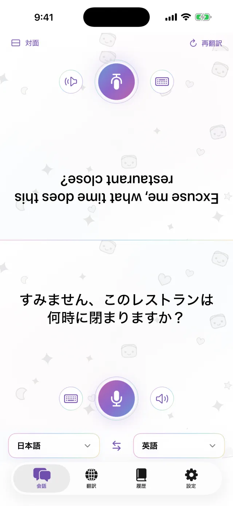
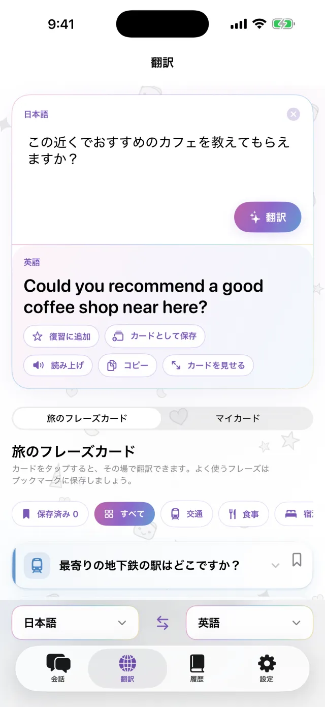
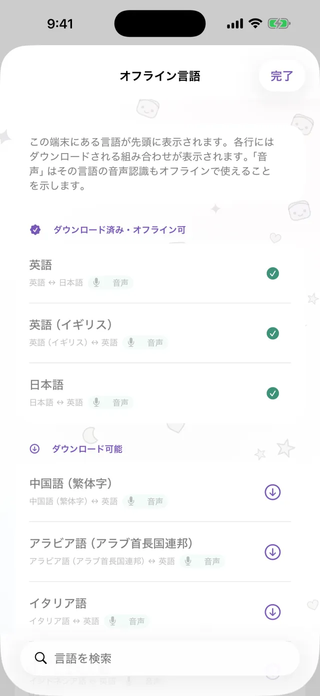
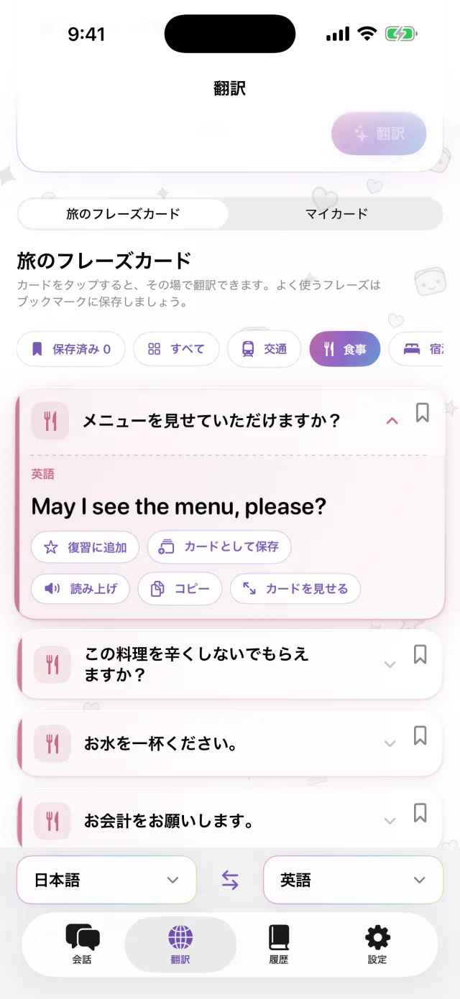
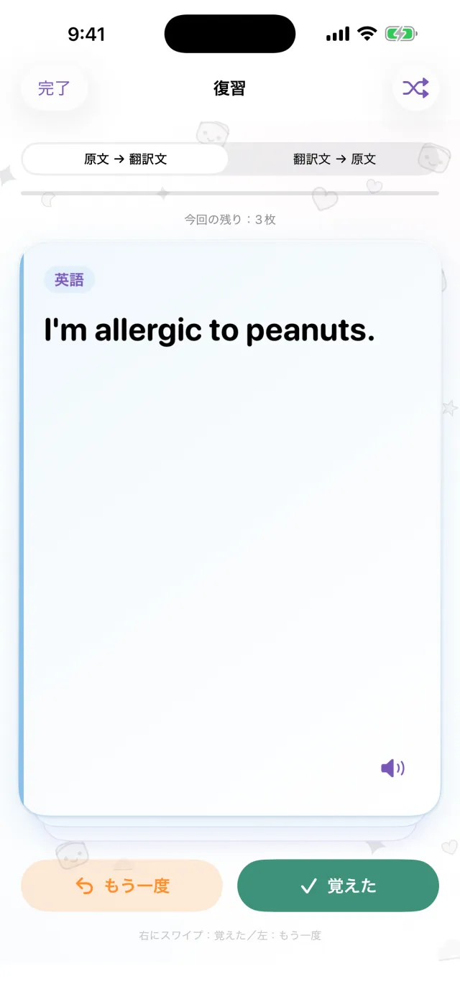

iPhone用の翻訳アプリ
iPhone用の翻訳アプリ
iPhoneを
間に置くだけ。
マイクをタップして話すと、画面の向こう半分に相手向きで翻訳が表示されます。相手が答えるときも同じです。言語を先にダウンロードしておけば、通信なしで使えます。
App Storeで近日公開- 約20言語に対応
- ダウンロード後はオフライン
- 登録は不要

文字入力
声を出せないときは入力で
静かな場所や、相手の話が速すぎるときは、文字で入力できます。翻訳を画面いっぱいに大きく表示して、相手に見せられます。
- コピーも読み上げもできます
- 2つの言語をワンタップで入れ替え

オフライン
通信がなくても翻訳できます
翻訳も音声認識も読み上げも、iPhoneの中で行います。旅行前に必要な言語をダウンロードしておけば、機内でも、SIMを手に入れる前でも使えます。話した内容はサーバーに送られず、録音も残りません。

フレーズカード
毎回言うことは、カードに保存
ホテルの住所、食べ物のアレルギー、探している駅など。カードに保存しておけば、毎回入力しなくて済みます。カードをタップすると、相手の言語に翻訳されます。交通、食事、宿泊、買い物のカードは最初から入っています。

Pro
保存した文を、時期が来たら復習
覚えたい文は、星をタップして保存します。覚えていれば、1日、3日、7日、14日、30日後に再び出てきます。覚えていなければ、同じ日にもう一度表示されます。原文から訳を思い出すことも、その逆もできます。この機能はProで使えます。

こんな場面で
- 小さな食堂で注文するとき
- タクシーの運転手さんに住所を伝えるとき
- 薬局でアレルギーを説明するとき
- ホテルのフロントに荷物を預けるとき
- 道を尋ねるとき
30秒で見る使い方
この動画は機内モードで撮影しています。
基本情報
| 対応言語 | 約20言語（Appleがデバイス上で翻訳できる言語） |
|---|---|
| オフライン | 対応（言語のダウンロード後） |
| 音声入力 | 対応。一部の言語は文字入力のみ |
| アカウント | 不要 |
| 料金 | 無料。Proは別料金（下記参照） |
| 動作環境 | iOS 18以降のiPhone |
- 初回は言語のダウンロードのため、通信が必要です。
- 料金は、App Storeにお住まいの地域の通貨で表示されます。
無料版とPro
無料
- 対面での会話
- 文字入力と全画面表示
- オフライン翻訳
- 旅のフレーズカードと、自分用カード3枚
- 小さなバナー広告あり
Pro
- 広告なし
- カードを何枚でも作成可能
- 翻訳履歴と、時期に合わせた復習
週額、月額、買い切りから選べます。